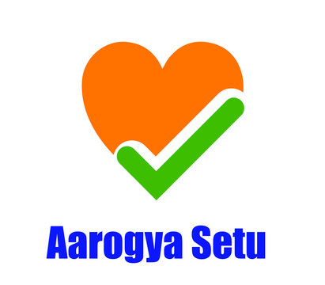
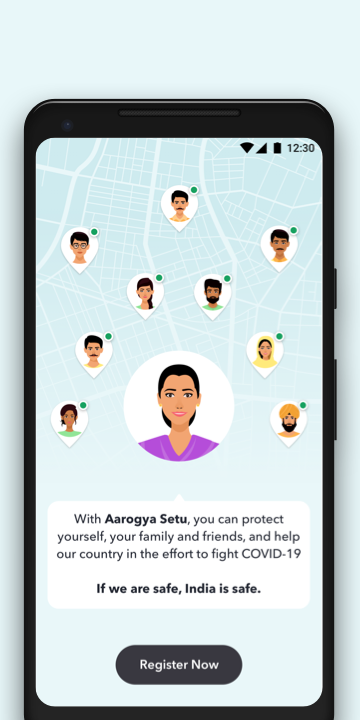

AAROGYA SETU
Aarogya Setu is a mobile application to keep people informed of their potential risk of Covid19 infection. The Government of India launched Aarogya Setu mobile App on April 02 to protect Indian citizens from mass spread coronavirus. The app uses a bluetooth based contact tracing mechanism. It records details of all the people you have come in contact with as you go about your routine activities. The application will alert you if any one of your contacts tests positive. Aarogya Setu app also provides the relevant and curated medical advisories pertaining to the Covid19 pandemic.

HOW DOES IT WORKS ?
The Aarogya Setu App on your phone detects other devices that have the same app when they come within the bluetooth proximity of your phone. When this happens, both the phones securely exchange a digital signature of that interaction, including time, proximity, location and duration. This data is stored on devices of all individuals. In case any person that you came in contact with in the last 14 days tests positive for coronavirus, the app calculates your risk of infection based on your proximity of interaction with that person. The app then recommends a suitable action.
TO KNOW MORE DETAILS CLICK THE BELOW BUTTON !!